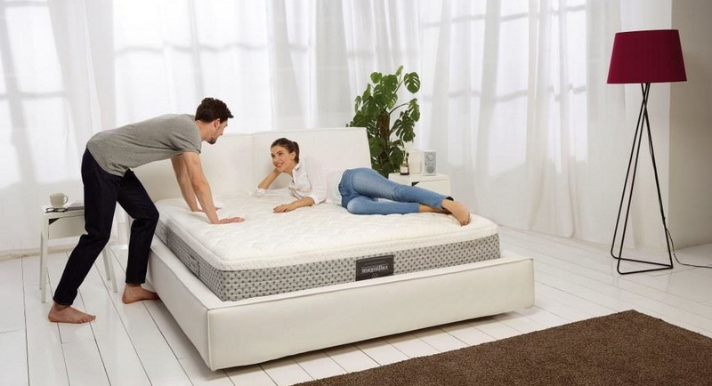

Які види ортопедичних матраців бувають
Ортопедичний матрац відіграє важливу роль у забезпеченні здорового сну. Його спеціальна конструкція створює оптимальну підтримку для тіла, дозволяючи хребту залишатися у природній позі. Це знижує ризик болю в спині та шийному відділі, а також допомагає покращити циркуляцію крові. Крім того, виріб сприяє рівномірному розподілу тиску, зменшуючи навантаження на суглоби та м'язи. Це суттєво покращує якість сну та загальне самопочуття. Вибір правильного ортопедичного матраца є ключовим фактором для підтримки вашого здоров'я.
Матраци діляться на кілька категорій, враховуючи різні параметри - розмір, конструкцію та жорсткість. Кожна з цих характеристик впливає на створення оптимальних умов для здорового та комфортного сну.
Розміри виробів
Вироби бувають трьох основних видів:
- Односпальні - призначені для однієї людини. Вони мають ширину від 80 до 90 см і довжину від 190 до 200 см. Найбільш поширеними розмірами є 80x200 см, 90x190 см та 90x200 см.
- Полуторні - підходять для однієї людини або двох людей. Вони більші за шириною, ніж односпальні. Вони мають ширину від 120 до 140 см і довжину від 190 до 200 см. Найбільш популярні моделі 120x190 см і 140x200 см.
- Двоспальні - призначені для двох людей. Вони мають ширину від 160 до 200 см та довжину від 190 до 200 см. Вироби виготовляються у розмірах 160x200 см, 180x200 см та 200x200 см.
Також існують нестандартні габарити, які можуть бути виконані на індивідуальне замовлення. Вони використовуються для нестандартних ліжок або потрібні людям з особливими потребами.
Конструкція ортопедичних матраців
Залежно від конструктивного рішення та типу матеріалів, ортопедичні матраци діляться на дві великі групи:

Пружинні матраци
Вони мають у своїй основі пружинний блок, який відповідає за ортопедичну підтримку тіла. Системи розрізняються за конструкцією, яка впливає на зручність використання та довговічність матраца:
Залежні пружини Bonnel - найпоширеніший тип пружинних блоків. Пружини з'єднані між собою в єдину систему, тому при навантаженні на одну пружину стискаються й сусідні елементи.
Незалежні пружини Pocket Spring - сучасніший блок. Кожна пружина знаходиться в окремому чохлі з тканини або нетканого матеріалу, тому при навантаженні на один елемент сусідні пружини не стискаються. Це забезпечує більш точну підтримку тіла та комфортніший сон.
Многозонні пружини - це вдосконалений варіант Pocket Spring. У таких системах пружини поділяються на зони, кожна з яких має жорсткість. Це дозволяє забезпечити більш точну підтримку тіла в різних частинах, що є особливо важливим для людей з проблемами хребта.
Подвійний пружинний блок - це комбінація двох систем, розташованих одна над одною. Нижній блок зазвичай є Pocket Spring, а верхній блок - Bonnel. Такий матрац поєднує переваги двох типів пружинних блоків: точну підтримку тіла і комфорт.
Безпружинні матраци
Моделі відрізняються відсутністю пружинного блоку. Вони складаються з одного або кількох шарів наповнювача. Матрац безпружинний виготовляється з різних наповнювачів - пінополіуретан, латекс, кокосова койра, шерсть, бавовна тощо.
Жорсткість ортопедичних матраців
Ортопедичні матраци розрізняються за жорсткістю, яка залежить від наповнювача та конструкції. Чим жорсткіший матрац, тим більше він підтримує хребет у правильному положенні. За жорсткістю виділяють три основні види:
Середні. Зазвичай мають кілька шарів наповнювача, таких як пінополіуретан, латекс, кокосова койра або холофайбер. Вони забезпечують хорошу підтримку хребта, але досить м'які, щоб не викликати дискомфорту при сні на боці. Середні матраци підходять для людей з вагою від 60 до 90 кг, а також для тих, хто вважає за краще спати на спині або животі.
Помірно-жорсткі. Оснащені більш щільним наповнювачем, ніж середні. Вони створюють більш виражену підтримку, ніж середні, що важливо для людей із надмірною вагою чи проблемами з хребтом. Помірно-жорсткі моделі підходять для людей з вагою від 90 до 120 кг, а також для тих, хто вважає за краще спати на боці.
Жорсткі. Мають найщільніший наповнювач із усіх трьох видів. Вони забезпечують максимальну підтримку хребта, що необхідно для людей із сильним навантаженням на суглоби. Жорсткі матраци підходять для людей з вагою понад 120 кг, а також для тих, хто вважає за краще спати на спині.
Додаткові особливості
Ортопедичні матраци пропонують широкий спектр особливостей, роблячи вибір ідеального матраца більш персоналізованим. Вони можуть бути гіпоалергенними, забезпечуючи безпеку для алергіків, водонепроникними, захищаючи від рідини та плям. Ортопедичні матраци бувають односторонніми та двосторонніми, пропонуючи різні рівні жорсткості. Деякі оснащені масажними елементами, інші мають ефект Зима-Літо, регулюючи температуру сну. При виборі ортопедичного матраца важливо враховувати свої індивідуальні потреби та переваги.
Вибір меблів в магазині KROVATO
Як правильно обрати ліжко?
При виборі ліжка в інтернет магазині Вам в першу чергу потрібно вибрати матеріал. Найбільшою популярністю користуються дерев'яні ліжка, виготовлені з вільхи, ясена чи дуба. Такі моделі чудово прикрасять Вашу спальню у квартирі чи приватному будинку. Для орендованих квартир, під здачу, більше підійде ліжко з металу, так як воно просто «не вбивається», а також має дуже демократичну ціну.
Для Вашої зручності ліжко може комплектуватись висувними ящиками або підйомним механізмом. Ящики можуть бути з одного боку ліжка або з двох. Також є моделі, з висувними ящиками спереду. Ліжка з підйомним механізмом, це відмінне рішення, для невеликих кімнат, вони дозволяють заощадити простір і мають велику нішу для зберігання постільної білизни. Всі дерев'яні ліжка комплектуються буковими ламелями. Спальне місце з ламельною основою може витримувати навантаження до 150 кг на одне спальне місце. Відстань між ламелями, у своїй має бути 2,5-3 див.
Кожне ліжко може бути забарвлене у різні кольори: чорні, білі, сірі, венге, у кольорі горіх. Завдяки цьому ліжко можна підібрати під будь-який інтер'єр.
Оформлення вітальні. Які м'які меблі краще вибрати?

Вітальня – це основна кімната у кожному будинку. Саме вона служить для прийому гостей, проведення часу всією сім'єю та просто для відпочинку у приємній теплій атмосфері. Оформляючи свій будинок та вітальню зокрема, всі намагаються зробити її максимально зручною, комфортною та красивою. Основним та центральним елементом оформлення вітальні, як і будь-якої іншої кімнати, є м'які меблі.
Будь-які меблі для вітальні повинні бути не тільки стильними і красивими, але і функціональними. На таких меблів має бути зручно та приємно відпочивати та приймати гостей. Однак сьогодні існує величезна різноманітність найрізноманітніших м'яких меблів для вітальні, яка підходить для кімнат різних розмірів і форм. На чому варто зупинити свій вибір? Як краще оформити свою вітальню, щоб вам було комфортно, а гості хотіли приходити до вас знову та знову?
На сайті інтернет магазину Кровато представлено велику різноманітність м'яких меблів для вітальні, серед яких кожен зможе вибрати для себе найбільш вдалий варіант. У нас ви знайдете:
- Прямі дивани. Такі дивани вважаються класикою. Вони підходять для віталень будь-яких форм та розмірів. Прямий диван виглядає стильно та лаконічно, на ньому зручно відпочивати, приймати гостей або навіть спати. Прямі дивани можуть стояти біля стіни, так і в центрі кімнати. Багато моделей прямих диванів легко розкладаються, перетворюючись на повноцінне спальне місце. Також більшість диванів мають великі та місткі ніші, які є додатковим місцем для зберігання;
- Кутові дивани Кутові дивани вважаються найзручнішими та комфортнішими. Вони ідеально підійдуть для приємного проведення часу в колі сім'ї або друзів. Кутові дивани в основному використовуються для оформлення великих віталень, так як вони займають багато місця, і для кімнат з невеликою площею просто не підійдуть;
- Тахти. Тахта - це одна з варіацій дивана, але стильніша і мінімалістична. Виглядають тахти дуже незвично і можуть підійти для будь-якого інтер'єру. Також тахти більше ніж звичайні дивани підходять для сну, оскільки в їх основі не пружинні блоки, а дерев'яні ламелі або ортопедичні матраци;
- Крісла. Крісло – це особливий предмет інтер'єру. Сучасні дизайнери не часто використовують його, вважаючи застарілим, проте саме крісла створюють особливий затишок та комфорт у будь-якій кімнаті. Сьогодні існує величезна різноманітність класичних та сучасних моделей крісел, що дозволяє кожному відшукати ідеальне крісло для свого будинку;
- Набір меблів. Комплект м'яких меблів – це відмінне рішення для тих, хто хоче меблювати свою вітальню не лише диваном, а й кріслами. Існують набори з одним або двома кріслами, із прямими або кутовими диванами. Основна перевага будь-якого готового меблевого гарнітура – це те, що предмети меблів у ньому ідеально поєднуються один з одним, і вам не потрібно буде витрачати свій час та сили на їхній підбір.